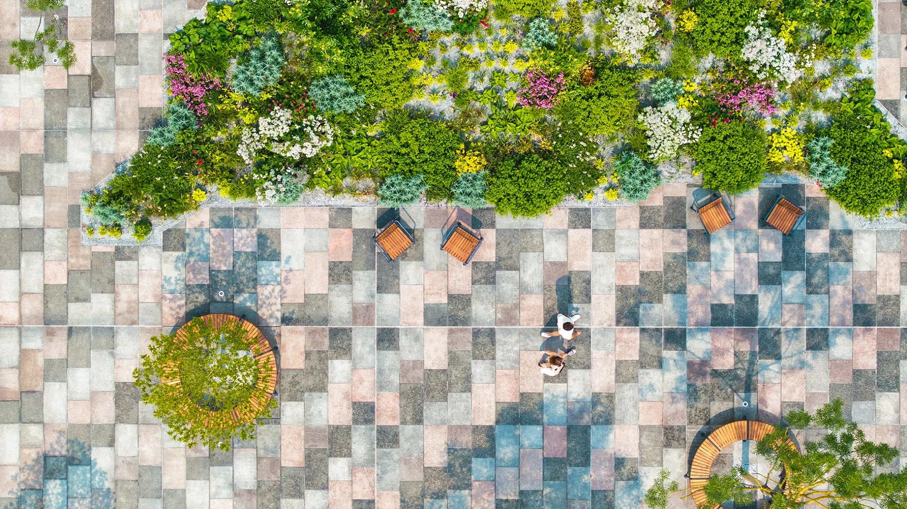
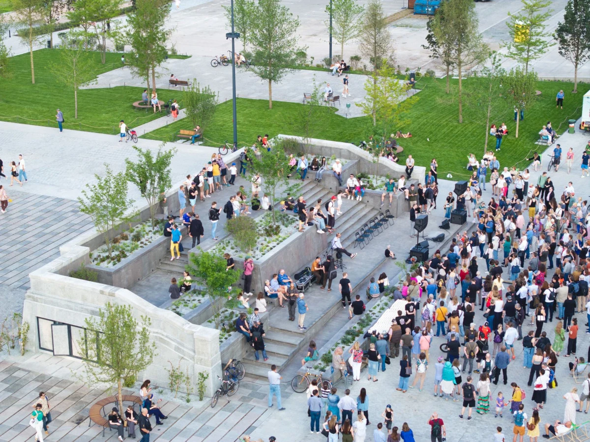

WARSZAWA · ŚRÓDMIEŚCIE
NOWE CENTRUM. NOWA ENERGIA.W samym centrum.
Bliżej natury.
Plac Centralny. Zielona przestrzeń,
żeby na chwilę zwolnić.

01 / MIEJSCE, KTÓRE ŁĄCZY
Miasto wokół.
Oddech tu.
Między codziennymi sprawami a kolejnym spotkaniem jest miejsce na małą przerwę. W cieniu drzew. Przy wodzie. W samym sercu Warszawy.
Wiosną 2025 roku przestrzeń placu Defilad od strony ulicy Marszałkowskiej zyskała nowe życie. Zamiast części bruku i betonu pojawiły się zieleń, niska sadzawka oraz miejsca do odpoczynku. Tuż przy Pałacu Kultury i Nauki powstał Plac Centralny — miejsce spotkań, spacerów i odkrywania śladów historii miasta.

MIASTO TWORZĄ LUDZIE02 / PO SWOJEMU
Usiądź.
Spotkaj się.
Zostań chwilę.
Zieleń zamiast pośpiechu
Drzewa, rabaty i niska sadzawka tworzą przestrzeń na spokojniejszy moment w mieście.
Miejsce obok siebie
Kilkadziesiąt ławek i krzeseł. Na rozmowę, chwilę z książką albo odpoczynek podczas spaceru.
Przestrzeń pełna życia
Spotkania, kultura i ślady dawnej Warszawy. Nowy rozdział w dobrze znanym miejscu.
03 / Z RÓŻNYCH PERSPEKTYW
Tak wygląda chwila tutaj.
Kliknij zdjęcie, by zobaczyć więcej.
04 / WSPÓLNE CHWILE
Najlepszy plan?
Po prostu być.
Spacer bez pośpiechu. Wspólne zdjęcie z Pałacem w tle. Rozmowa, na którą wreszcie jest czas.
Plac Centralny to przede wszystkim ludzie i ich małe, codzienne historie. Twoja też może zacząć się tutaj.
Zaplanuj swój spacer05 / DO ZOBACZENIA
Spotkajmy się
w centrum.
Plac Centralny
Warszawa, Śródmieście
Plac Defilad od strony ul. Marszałkowskiej,
przed Pałacem Kultury i Nauki.